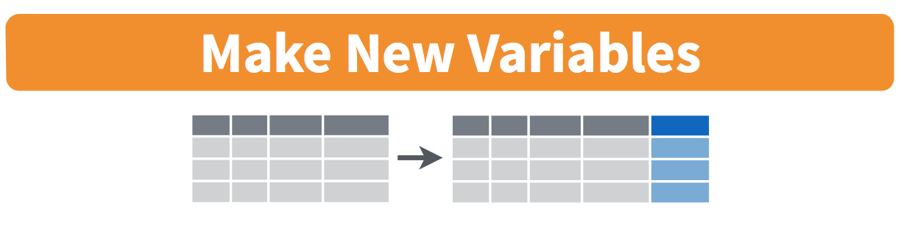
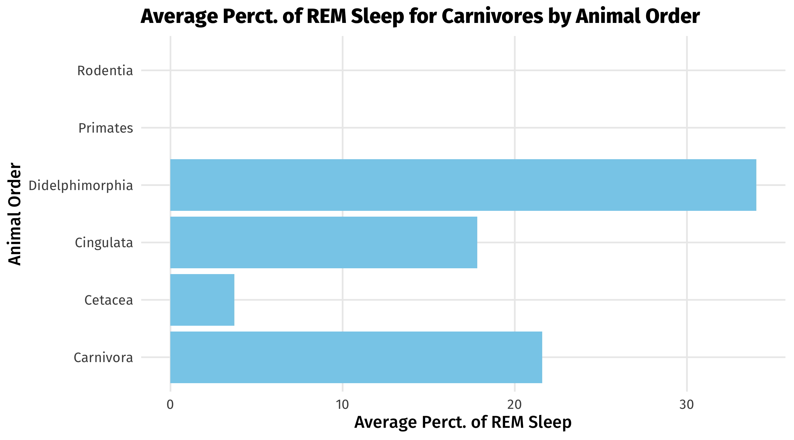
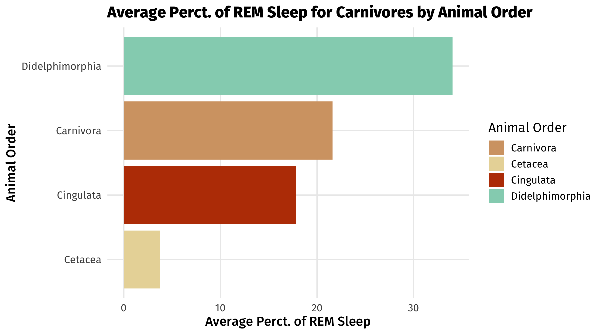

POL51
University of California, Davis
October 29, 2026
Objects
mutate()
summarize()
Homework and midterm questions
Step 1-2: the data, the pipe, the wrangling functions
In programming, objects can be used to store all sorts of stuff for later use
data, functions, values
We create objects using = or <-
There are only two hard things in Computer Science: cache invalidation and naming things. – Phil Karlton
Recommend: keep it short, easy to type, informative, and use _ to separate words
mutate()mutate() adds new variables to data

# A tibble: 100 × 4
state city population murder_total
<chr> <chr> <dbl> <dbl>
1 Alabama Mobile 248431 50.0
2 Alaska Anchorage 296188 27.0
3 Arizona Chandler 249355 5.01
4 Arizona Gilbert 242090 5.01
5 Arizona Glendale 249273 12.0
6 Arizona Mesa 492268 23.0
7 Arizona Phoenix 1608139 154.
8 Arizona Scottsdale 251840 5.01
9 Arizona Tucson 532323 46.0
10 California Anaheim 353400 10.0
# ℹ 90 more rows# A tibble: 100 × 4
state city population murder_total
<chr> <chr> <dbl> <dbl>
1 Alabama Mobile 248431 50.0
2 Alaska Anchorage 296188 27.0
3 Arizona Chandler 249355 5.01
4 Arizona Gilbert 242090 5.01
5 Arizona Glendale 249273 12.0
6 Arizona Mesa 492268 23.0
7 Arizona Phoenix 1608139 154.
8 Arizona Scottsdale 251840 5.01
9 Arizona Tucson 532323 46.0
10 California Anaheim 353400 10.0
# ℹ 90 more rows# A tibble: 100 × 5
state city population murder_total murder_capita
<chr> <chr> <dbl> <dbl> <dbl>
1 Alabama Mobile 248431 50.0 0.000201
2 Alaska Anchorage 296188 27.0 0.0000912
3 Arizona Chandler 249355 5.01 0.0000201
4 Arizona Gilbert 242090 5.01 0.0000207
5 Arizona Glendale 249273 12.0 0.0000481
6 Arizona Mesa 492268 23.0 0.0000467
7 Arizona Phoenix 1608139 154. 0.0000955
8 Arizona Scottsdale 251840 5.01 0.0000199
9 Arizona Tucson 532323 46.0 0.0000864
10 California Anaheim 353400 10.0 0.0000283
# ℹ 90 more rowsNotice that I named a new variable, murder_capita
murder_set |>
mutate(murder_capita = murder_total / population,
murder_rate = murder_capita * 100000)# A tibble: 100 × 6
state city population murder_total murder_capita murder_rate
<chr> <chr> <dbl> <dbl> <dbl> <dbl>
1 Alabama Mobile 248431 50.0 0.000201 20.1
2 Alaska Anchorage 296188 27.0 0.0000912 9.12
3 Arizona Chandler 249355 5.01 0.0000201 2.01
4 Arizona Gilbert 242090 5.01 0.0000207 2.07
5 Arizona Glendale 249273 12.0 0.0000481 4.81
6 Arizona Mesa 492268 23.0 0.0000467 4.67
7 Arizona Phoenix 1608139 154. 0.0000955 9.55
8 Arizona Scottsdale 251840 5.01 0.0000199 1.99
9 Arizona Tucson 532323 46.0 0.0000864 8.64
10 California Anaheim 353400 10.0 0.0000283 2.83
# ℹ 90 more rowsNotice the new columns
If you don’t store your changes, they will melt away, like tears in the rain
# A tibble: 100 × 4
state city population murder_total
<chr> <chr> <dbl> <dbl>
1 Alabama Mobile 248431 50.0
2 Alaska Anchorage 296188 27.0
3 Arizona Chandler 249355 5.01
4 Arizona Gilbert 242090 5.01
5 Arizona Glendale 249273 12.0
6 Arizona Mesa 492268 23.0
7 Arizona Phoenix 1608139 154.
8 Arizona Scottsdale 251840 5.01
9 Arizona Tucson 532323 46.0
10 California Anaheim 353400 10.0
# ℹ 90 more rowsYou can make a new object:
Or overwrite the old one
In general, overwriting when you are adding stuff to your data (mutate) is fine
# A tibble: 100 × 6
state city population murder_total murder_capita murder_rate
<chr> <chr> <dbl> <dbl> <dbl> <dbl>
1 Alabama Mobile 248431 50.0 0.000201 20.1
2 Alaska Anchorage 296188 27.0 0.0000912 9.12
3 Arizona Chandler 249355 5.01 0.0000201 2.01
4 Arizona Gilbert 242090 5.01 0.0000207 2.07
5 Arizona Glendale 249273 12.0 0.0000481 4.81
6 Arizona Mesa 492268 23.0 0.0000467 4.67
7 Arizona Phoenix 1608139 154. 0.0000955 9.55
8 Arizona Scottsdale 251840 5.01 0.0000199 1.99
9 Arizona Tucson 532323 46.0 0.0000864 8.64
10 California Anaheim 353400 10.0 0.0000283 2.83
# ℹ 90 more rowsOverwriting when you are removing information from the data can be bad
For example, when we filter()
# A tibble: 624 × 6
country continent year lifeExp pop gdpPercap
<fct> <fct> <int> <dbl> <int> <dbl>
1 Algeria Africa 1952 43.1 9279525 2449.
2 Algeria Africa 1957 45.7 10270856 3014.
3 Algeria Africa 1962 48.3 11000948 2551.
4 Algeria Africa 1967 51.4 12760499 3247.
5 Algeria Africa 1972 54.5 14760787 4183.
6 Algeria Africa 1977 58.0 17152804 4910.
7 Algeria Africa 1982 61.4 20033753 5745.
8 Algeria Africa 1987 65.8 23254956 5681.
9 Algeria Africa 1992 67.7 26298373 5023.
10 Algeria Africa 1997 69.2 29072015 4797.
# ℹ 614 more rowsThis is bad, since we lose the original gapminder data
case_when()Sometimes we want to create categorical variables (tall, short, poor, rich, Republican-leaning, Democrat-leaning, etc.)
We can use case_when(), which goes within mutate()
Like filter(), case_when() also relies on logical operators
| name | state | per_gop_2020 | per_dem_2020 |
|---|---|---|---|
| Thomas County | KS | 0.82 | 0.16 |
| Red Willow County | NE | 0.83 | 0.15 |
| Madison Parish | LA | 0.41 | 0.57 |
| Refugio County | TX | 0.66 | 0.33 |
| Ford County | KS | 0.65 | 0.33 |
| Upshur County | WV | 0.76 | 0.22 |
| Ford County | IL | 0.72 | 0.25 |
| Prince William County | VA | 0.36 | 0.63 |
| Adair County | OK | 0.79 | 0.20 |
| Cochran County | TX | 0.81 | 0.18 |
The general formula: case_when(CONDITION ~ LABEL)
# A tibble: 3,152 × 4
name state per_gop_2020 per_dem_2020
<chr> <chr> <dbl> <dbl>
1 Autauga County AL 0.714 0.270
2 Baldwin County AL 0.762 0.224
3 Barbour County AL 0.535 0.458
4 Bibb County AL 0.784 0.207
5 Blount County AL 0.896 0.0957
6 Bullock County AL 0.248 0.747
7 Butler County AL 0.575 0.418
8 Calhoun County AL 0.688 0.298
9 Chambers County AL 0.573 0.416
10 Cherokee County AL 0.860 0.132
# ℹ 3,142 more rowsThe general formula: case_when(CONDITION ~ LABEL)
# A tibble: 3,152 × 5
name state per_gop_2020 per_dem_2020 who_won
<chr> <chr> <dbl> <dbl> <chr>
1 Autauga County AL 0.714 0.270 Republicans
2 Baldwin County AL 0.762 0.224 Republicans
3 Barbour County AL 0.535 0.458 Republicans
4 Bibb County AL 0.784 0.207 Republicans
5 Blount County AL 0.896 0.0957 Republicans
6 Bullock County AL 0.248 0.747 <NA>
7 Butler County AL 0.575 0.418 Republicans
8 Calhoun County AL 0.688 0.298 Republicans
9 Chambers County AL 0.573 0.416 Republicans
10 Cherokee County AL 0.860 0.132 Republicans
# ℹ 3,142 more rowsNote
Remember when we mutate() we have to name the new variable
The general formula: case_when(CONDITION ~ LABEL)
small_elections |>
mutate(who_won = case_when(per_gop_2020 > per_dem_2020 ~ "Republicans",
per_dem_2020 > per_gop_2020 ~ "Democrats"))# A tibble: 3,152 × 5
name state per_gop_2020 per_dem_2020 who_won
<chr> <chr> <dbl> <dbl> <chr>
1 Autauga County AL 0.714 0.270 Republicans
2 Baldwin County AL 0.762 0.224 Republicans
3 Barbour County AL 0.535 0.458 Republicans
4 Bibb County AL 0.784 0.207 Republicans
5 Blount County AL 0.896 0.0957 Republicans
6 Bullock County AL 0.248 0.747 Democrats
7 Butler County AL 0.575 0.418 Republicans
8 Calhoun County AL 0.688 0.298 Republicans
9 Chambers County AL 0.573 0.416 Republicans
10 Cherokee County AL 0.860 0.132 Republicans
# ℹ 3,142 more rowssummarize()We can use summarize() to calculate things like the mean, median, etc.
Summarizing condenses data into statistics
summarize()Say I want to know the average life expectancy in the world in 2007:
# A tibble: 52 × 6
country continent year lifeExp pop gdpPercap
<fct> <fct> <int> <dbl> <int> <dbl>
1 Algeria Africa 2007 72.3 33333216 6223.
2 Angola Africa 2007 42.7 12420476 4797.
3 Benin Africa 2007 56.7 8078314 1441.
4 Botswana Africa 2007 50.7 1639131 12570.
5 Burkina Faso Africa 2007 52.3 14326203 1217.
6 Burundi Africa 2007 49.6 8390505 430.
7 Cameroon Africa 2007 50.4 17696293 2042.
8 Central African Republic Africa 2007 44.7 4369038 706.
9 Chad Africa 2007 50.7 10238807 1704.
10 Comoros Africa 2007 65.2 710960 986.
# ℹ 42 more rowssummarize()summarize()# A tibble: 1 × 1
avg_life
<dbl>
1 54.8Notice how the data has been summarized: only one row
Notice that I’ve named the summary statistic avg_life
summarize()What if I also wanted to know the median life expectancy?
summarize()What if I also wanted to know the min and max life expectancy?
summarize()What if I also wanted to know the standard deviation of life expectancy?
summarize()summarize() is like mutate() in that you are creating new variables
So note that you have to name the new variables!
which country had the lowest life expectancy in 2007?
which countries had above average GPD but below average health?
# A tibble: 6 × 6
country continent year lifeExp pop gdpPercap
<fct> <fct> <int> <dbl> <int> <dbl>
1 Angola Africa 2007 42.7 12420476 4797.
2 Botswana Africa 2007 50.7 1639131 12570.
3 Equatorial Guinea Africa 2007 51.6 551201 12154.
4 Namibia Africa 2007 52.9 2055080 4811.
5 South Africa Africa 2007 49.3 43997828 9270.
6 Swaziland Africa 2007 39.6 1133066 4513.In life, sometimes data is missing
respondent doesn’t answer a question, no one knows Afghanistan’s GDP in 1943, etc.
R represents missing data as NA
| name | type1 | type2 | height_m | weight_kg |
|---|---|---|---|---|
| Diglett | ground | ground | NA | NA |
| Geodude | rock | ground | NA | NA |
| Rattata | normal | dark | NA | NA |
| Dugtrio | ground | ground | NA | NA |
| Lycanroc | rock | NA | NA | NA |
| Raticate | normal | dark | NA | NA |
If you try to summarize data that has missing values, R will return NA:
Note
Any math operation with NA will return NA (.e.g, 3 + NA = NA)
There are whole classes on what to do with missing data (impute, simulate, model, etc.)
In this class we will tell R to ignore missing observations
If you’re trying to calculate a summary statistic and keep getting NA…
99.99999% of the time you need to add na.rm = TRUE to your function!
Using the msleep dataset in tidyverse:
Subset the data to carni animals (column name is vore) only, make a new variable for the difference in the sleep_total and sleep_rem as a percent called rem_perc.
What is the the average percent of rem_sleep grouped by the order.
Using a bar plot, plot the different percentages of rem sleep by order.
Tip
Remember to attach your libraries using library()
To group by a variable(s) use the function group_by()
data |>
group_by(variable_name) |>
mutate() or summarize()
library(tidyverse)
dat <- msleep |>
filter(vore == "carni") |>
mutate(
rem_perc = sleep_rem/sleep_total * 100
)
dat_2 <- dat |>
group_by(order) |>
summarize(mean = mean(rem_perc, na.rm = TRUE)
)
ggplot(dat_2, aes(y = order, x = mean)) +
geom_col(fill = "skyblue") +
labs(title = "Average Perct. of REM Sleep for Carnivores by Animal Order",
x = "Average Perct. of REM Sleep",
y = "Animal Order")
library(tidyverse)
dat <- msleep |>
filter(vore == "carni") |>
mutate(
rem_perc = sleep_rem/sleep_total * 100
) |>
group_by(order) |>
summarize(mean = mean(rem_perc, na.rm = TRUE)
) |>
filter(!is.na(mean))
savannah_apex <- c("#D4A373", "#E9D8A6", "#BB3E03", "#94D2BD", "#0A9396")
ggplot(dat, aes(x = mean, y = reorder(order, mean), fill=order)) +
geom_col() +
scale_fill_manual(values = savannah_apex,
name = "Animal Order") +
labs(title = "Average Perct. of REM Sleep for Carnivores by Animal Order",
x = "Average Perct. of REM Sleep",
y = "Animal Order")